Активам свойственно не только расти, но и падать. А компании не существуют вечно, иногда они банкротятся. Инвестируя, вы гарантированно столкнетесь с теми или иными рисками. Безрисковых инвестиций не бывает — такова их природа.
Риски могут проявляться по-разному: в виде колебания цен, в потери части капитала, в обесценивании денег в результате инфляции и т.д. Частично риски можно снизить, но в любом случае какой-то риск всегда остается, полностью риск устранить нельзя.
Характер каждого человека очень индивидуален, и если один инвестор может принять на себя один уровень риска, для другого он может оказаться неприемлемым. Стратегия Asset Allocation может снизить риски с помощью распределения активов в портфеле в определенной пропорции, и контролировать риск так, чтобы он не выходил за рамки комфортных границ. Сочетание различных активов позволяет инвестору создать портфель с уникальным сочетанием риска и доходности, которое подходит именно этому инвестору. Для этого тща
тельным образом изучается риск и доходность активов, речь о которых пойдет в этой статье.Рыночный риск означает риск снижения цены актива. Риск измеряется волатильностью — это степень колебаний рыночной стоимости или доходности актива. Чем сильнее меняется цена актива, тем больше его волатильность. Например, можно сказать, что акция, цена которой за год колебалась в диапазоне от -5% до +5%, менее волатильная, чем акция, цена которой колебалась от -10% до +10%.
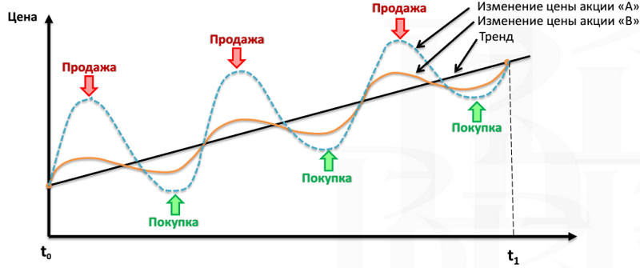Ниже на графике показана динамика акций США крупной и малой капитализации, государственных облигаций США и краткосрочных векселей. Хорошо видно, что график акций очень неровный: их цена сильно падала и сильно росла, но зато они принесли самую большую доходность с 1926 года. График облигаций более сглаженный, но их цена тоже подвержена колебаниям, хотя и в меньше степени, а доход значительно ниже. Линия казначейских векселей самая плавная из всех, но их доходность самая низкая.
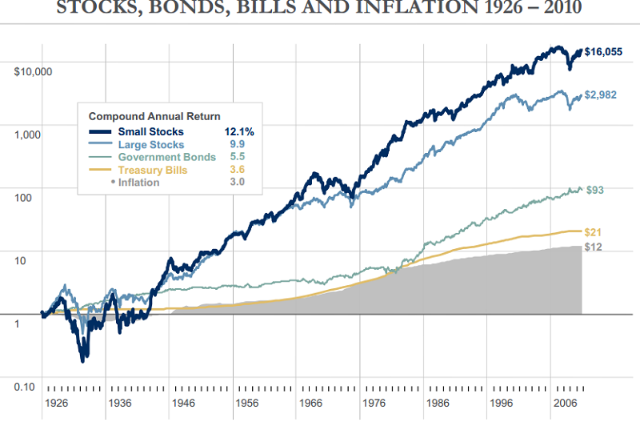Волатильность еще можно интерпретировать как предсказуемость доходности: чем сильнее колебания цены актива, тем сложнее предсказать его доходность. Соответственно, чем ниже предсказуемость доходности актива, тем выше его риск.
Когда вы кладете деньги на депозит, вы почти со 100% уверенностью можете сказать, что получите заявленный банком доход. Поэтому депозит имеет низкий риск. Когда вы инвестируете в акции, их цена может сильно колебаться, поэтому практические невозможно точно предсказать их будущую доходность. Поэтому когда говорят, что у актива высокий риск, это означает, что его доходность сложно заранее предсказать.
Волатильность математически измеряется стандартным отклонением. Оно показывает величину отклонения доходности актива от среднего значения. Для расчета СО берут множество доходностей, например за несколько месяцев, дней или лет и рассчитывают среднее арифметическое значение. Затем по формуле стандартного отклонения рассчитывают, в какой степени значения доходности отклоняются от среднего арифметического. Я сейчас не буду углубляться в эту математику, но кому интересно, могут прочить про это в Википедии.
Стандартное отклонение можно изобразить графически в виде кривой нормального распределения. По горизонтали откладывается степень отклонения, а по вертикали частота попадания в указанный отрезок. Форма кривой имеет вид колокола, середина которого — это среднее арифметическое значение. Кривая показывает, что при нормальном распределении большинство значений лежит рядом со средним арифметическим. Но чем больше отклонение от среднего арифметического, теме меньше значений попадает в эти отрезки.
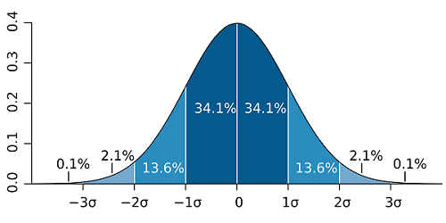Теперь посмотрим на реальное распределение доходности акций и облигаций. Если взять годовые доходности индекса S&P500 и 10-летних трежерис с 1928 по 2015 год, то их распределение будет выглядеть следующим образом:
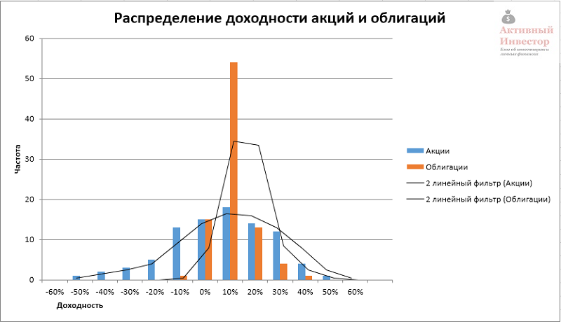Распределение доходностей напоминает форму колокола, большинство значений находится вблизи среднего арифметического и уменьшается по мере отклонения от него.
Если сравнить форму колокола акций и облигаций, можно заметить, что колокол S&P 500 имеет более широкое основание и приплюснут сверху, а колокол трежерис наоборот: имеет более узкое основание и вытянут вверх. Это говорит о том, что значения доходности индекса S&P500 лежат в более широком диапазоне по сравнению с доходностью трежерис (иначе говоря, имеют более высокое стандартное отклонение), а доходности облигаций наоборот, приближены к среднему значению (низкое СО).
Ниже в таблице можно увидеть доходность и стандартное отклонение индекса S&P 500, 10-летних государственных облигаций США и 3-месячных казначейских векселей.
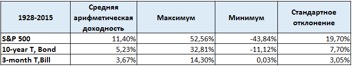Например, средняя арифметическая доходность индекса S&P 500 за 88 лет составила 11,4%, стандартное отклонение 19,7%. Это означает, что доходность отклонялась от средней на 19,7%, то есть примерно в 70% случаев годовая доходность находилась в диапазоне от -8,3% до 31,1%.
Чем сильнее значения доходности отклоняются от среднего значения, тем больше СО, а значит больше риск. Низкое СО означает, что годовые доходности лежат вблизи среднего значения и диапазон отклонения небольшой.
Один из способов уменьшить риск и увеличить предсказуемость результата — инвестировать на долгий срок. На графике ниже изображены диапазоны реальной доходности (за вычетом инфляции) 5-летних трежерис и акций США на сроке с 1972 по 2015 год. На горизонтальной оси отложен срок удержания актива от 1 года до 40 лет. На вертикальной — историческая доходность актива на конкретном сроке удержания. Синяя линия — максимальная доходность, которую можно было получить, красная линия — минимальная доходность, зеленая — средняя годовая.
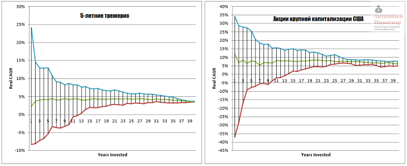Например, на сроке удержания 1 год по акциям можно было получить доходность от -37% до +34%, и в среднем около 10%. Но с увеличением срока инвестирования, нижний и верхний пределы сближаются друг к другу и стремятся к средней величине. Например, на сроке 20 лет максимальная и минимальная доходности находятся гораздо ближе: от +5% до +14%. У облигаций разброс доходности на сроке 1 год значительно ниже акций: от -8% до +24%, но тенденция чем дольше срок, тем ниже разброс, наблюдается и здесь.
С увеличением срока инвестирования разброс доходности сужается, а сама доходность стремится к средней величине. Таким образом можно сделать вывод: чем больше срок инвестирования, тем выше предсказуемость результата и ниже риск.
Акции сильно волатильный инструмент и могут проносить отрицательную доходность. Даже на сроке в 10 лет акции могут не принести никакой прибыли. Но исторически на сроке от 14 лет и более акции всегда выходили в плюс. Поэтому акции — инструмент долгосрочного инвестора, на продолжительном сроке доходность акций значительно опережает темпы инфляции. И чем больше срок, тем акции выгоднее всех остальных инструментов.
Риск означает не получить ожидаемую доходность. Волатильность дает инвестору представление о возможном риске. Когда вы инвестируете в банковский депозит или в государственные облигации вы почти со 100% вероятностью получите ожидаемую доходность. Но когда вы инвестируете в акции или недвижимость, чей денежный поток может сильно колебаться и зависит от множества факторов вроде прибыли компании и состояния экономики, вы не можете быть полностью уверены, что получите ожидаемый доход. Поэтому такие активы более рискованны, но способны приносить большую доходность. Риск и доходность актива неразрывно связаны друг с другом.
На диаграмме ниже изображены разные классы активов в зависимости от их риска и доходности на сроке с 1973 до 2013 года. Горизонтальная линия — это стандартное отклонение (риск), вертикальная линия — средняя годовая доходность. Можно заметить, что акции находятся в области высокой доходности и высокого риска, а облигации и краткосрочные векселя в области низкой доходности и низкого риска.
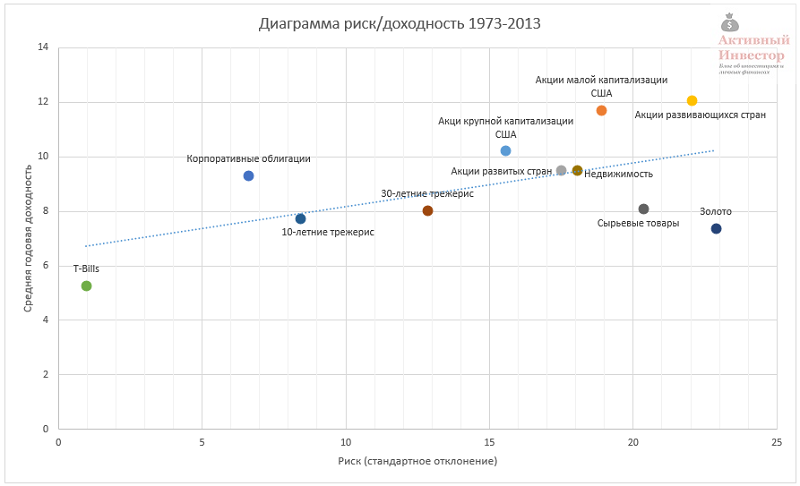Разница в доходности между акциями и облигациями называется премия за риск — это дополнительная доходность по сравнению с «безрисковым» активом, которую получает инвестор, беря на себя риск.
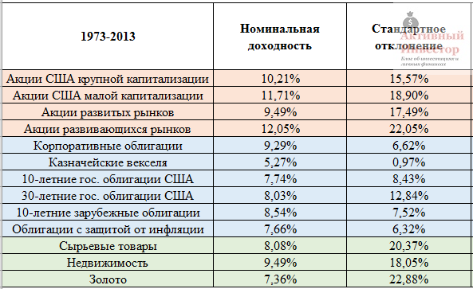Каждый актив имеет свое сочетание риска и доходности. Акции способны приносить большую доходность, но при этом имеют большой риск. Например, акции крупной капитализации США с 1973 года приносили в среднем 10,21% в год при стандартном отклонении 15,57%. Облигации наоборот — их доходность была меньше, так же как и риск. Данное правило наблюдается и в разрезе категорий: акции малой капитализации более прибыльны и рискованны, чем акции крупной капитализации. Краткосрочные векселя (T-bills) имеют самую низкую волатильность, но и самую низкую доходность. Таким образом можно прочертить четкую линию тренда — с ростом доходности актива возрастает и его риск.
Активы, которые включаются в портфель, должны иметь положительную реальную доходность, то есть опережать инфляцию. Нет смысла включать в портфель активы, которые не приносят реальной прибыли, они не будут увеличивать покупательную способность инвестированного капитала.
Обычно доходность, которую вы видите на различных сайтах и в таблицах — номинальная. К сожалению, номинальную доходность на хлеб не намажешь. Номинальная доходность — понятие относительное. Какая доходность больше: 10% или 8%? На первый взгляд конечно же 10%. Но если инфляция в первом случае 9%, а во втором 6%, то номинальные 10% превращаются в реальный 1%, а 8% в реальные 2%. В итоге выходит, что 8% больше, чем 10%. Поэтому номинальная доходность понятие очень относительное.
На графике ниже показана динамика стоимости одного доллара, вложенного в 1900 году в акции США, облигации и краткосрочные векселя, а так же динамика потребительской инфляции. Дивиденды и проценты реинвестировались. За 101 год 1 доллар США в акциях вырос до 16 тысяч долларов, в облигациях до 119, в краткосрочных векселях до 57. Инфляция выросла в 24 раза. В среднегодовых процентах такой рост составил 10,1% в акциях, 4,8% в облигациях и 4,1% в векселях.
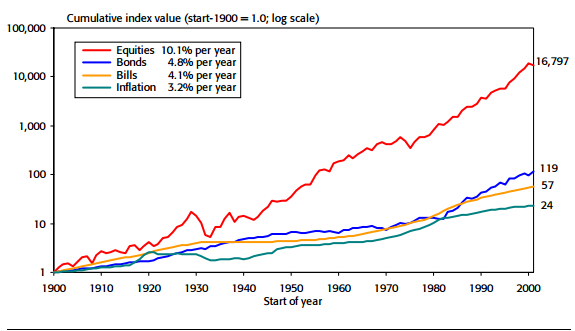Реальная доходность тех же активов за вычетом инфляции составила 6,7% в год у акций, 1,6% у облигаций и 0,9% у векселей. В реальном выражении покупательная способность 1$ в акциях выросла до 710 долларов, в облигациях до $5, в векселях до $2,4.
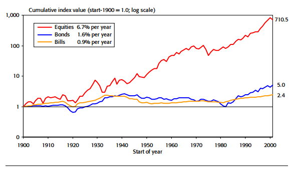Оба графика демонстрируют доминирование акций на длительном сроке инвестирования. Данный период включает первую мировую войну, великую депрессию и нефтяной кризис 1970-х. Несмотря на кризисы и войны акции по доходности значительно обогнали остальные активы в реальном выражении, тем самым обеспечив наибольшее увеличение покупательной способности вложений.
То же самое наблюдается и на зарубежных рынках — везде акции за последние 100 лет значительно обгоняли инфляцию.
Выше была рассмотрена доходность в основном трех активов, которые представляют только американский рынок. Но помимо них, существуют еще другие активы, в том числе и зарубежные. В таблице ниже представлена номинальная и реальная доходность различных классов активов за 40-летний период с 1973 по 2013. Например, номинальная доходность акций развивающихся рынков была 12,05%, но после вычета инфляции снизилась до 7,5%. В целом реальная доходность акций 5%-7%, облигаций 1%-5%, других активов 3%-5%. Важно отметить, что все активы в таблице показали долгосрочную положительную доходность.
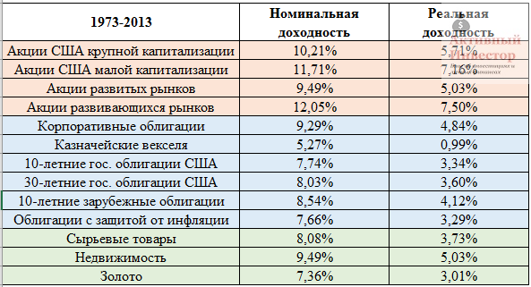По акциям выплачиваются дивиденды. Если вы будете инвестировать в акции напрямую или через зарубежные ETF, то будете регулярно их получать. То же самое касается облигаций и недвижимости — по ним тоже выплачиваются проценты. Все выплаты дивидендов и процентов должны реинвестироваться. Реинвестирование значительно увеличивает доходность портфеля активов. Реинвестирование доходов создает эффект сложных процентов, когда проценты начисляется на проценты.
Например, акции с реинвестированием дивидендов за период с 1991 по 2010 принесли среднюю годовую доходность 9,1%. Если бы дивиденды тратились, доходность была бы на 2,3% меньше.